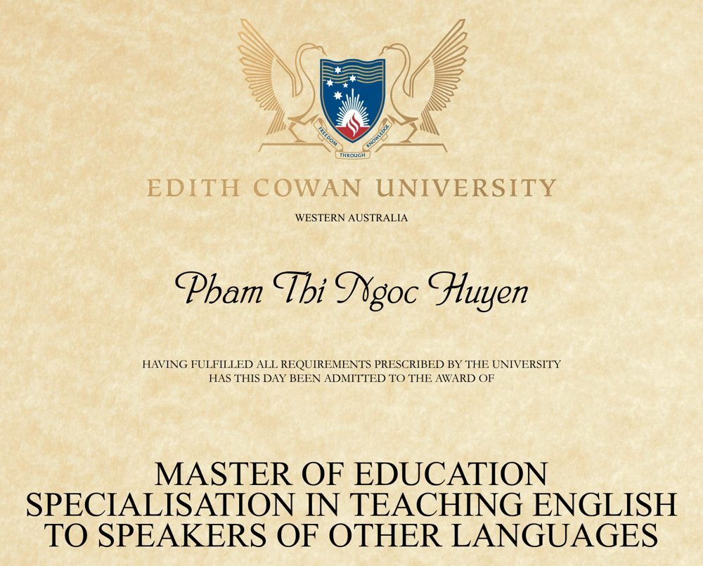
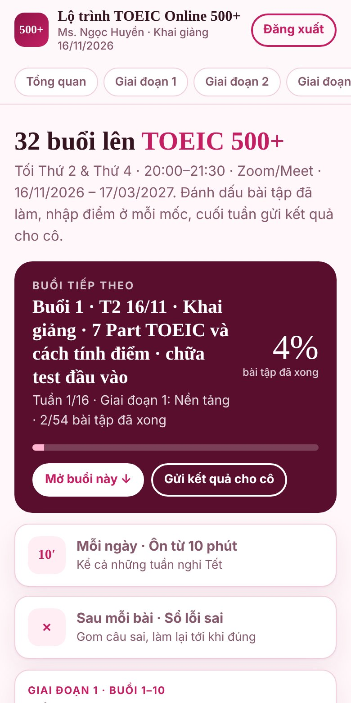
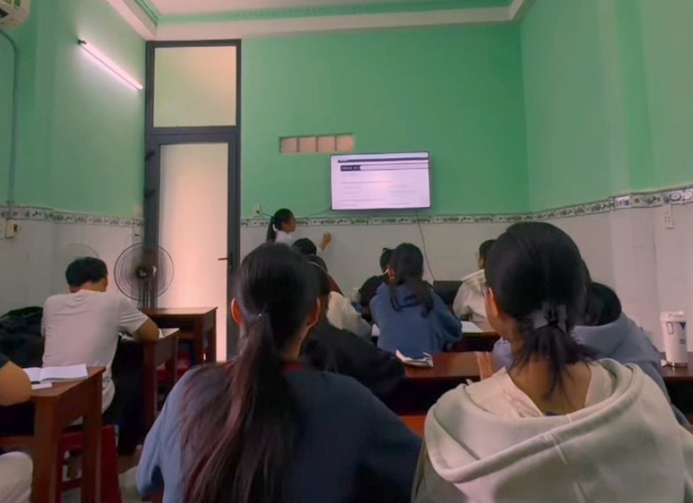

Học trực tiếp với cô qua Zoom/Meet tối Thứ 2 & Thứ 4. Mỗi buổi có tài liệu và bài tập về nhà rõ ràng, có trang lộ trình theo dõi tiến độ và 5 mốc kiểm tra điểm.

Thạc sĩ TESOL · Edith Cowan University7 chủ điểm ngữ pháp, từ loại, từ vựng theo chủ đề, làm quen Part 1, 2 và 5.
Mục tiêu 300–350Part 3, 4, 6, 7 và chiến thuật phòng thi. Học xong toàn bộ kiến thức trước Tết.
Mục tiêu 400–450Giải đề Listening YBM 2026 và Reading ETS 2026 có bấm giờ, chữa từng câu trên lớp, thi thử 200 câu 2 lần.
Mục tiêu 500+Toàn bộ bài giảng, bài tập và đề luyện là tài liệu cô Ngọc Huyền tự biên soạn, học trên điện thoại hay máy tính đều được.
Biết trước từng buổi học gì, tài liệu nào và bài tập về nhà nào. Đánh dấu bài đã làm, xem tiến độ.
Đầu vào, 3 mốc giữa khoá và đề cuối khoá. Nhập điểm, so tiến bộ, gửi kết quả cho cô qua Zalo.
Video bài giảng 7 chủ điểm, bảng tóm tắt, mini test 3 mức và flashcard cấu trúc.
Video từng Part, bài nghe theo Sách 650 và đề ETS, luyện nghe 4 chế độ có script.
Chuyên đề Part 5, Part 6, Part 7 và bộ Mini Test có dịch, giải thích từng câu.
Listening YBM 2026 + Reading ETS 2026 đầy đủ, bấm giờ như thi thật, xem điểm theo từng Part.

Thạc sĩ Giáo dục chuyên ngành TESOL (Đại học Edith Cowan, Úc). Giáo viên tiếng Anh THPT và luyện thi TOEIC tại TP.HCM. Trực tiếp giảng dạy và biên soạn toàn bộ tài liệu trong khoá.

Lớp học qua Zoom hoặc Google Meet trên điện thoại hay máy tính. Tài liệu mở bằng trình duyệt, không cần cài ứng dụng.
Mỗi buổi đều có tài liệu và bài tập ghi sẵn trên trang lộ trình. Em xem lại bài, làm bài tập và nhắn cô nếu có chỗ chưa hiểu.
Sau khi đăng ký, em gửi cô Gmail của em. Cô kích hoạt xong, em mở link khoá học, bấm Đăng nhập bằng Google và chọn đúng Gmail đó. Chỉ Gmail đã được cô kích hoạt mới mở được tài liệu.
Nên làm. Bài kiểm tra trình độ giúp cô biết điểm mạnh, điểm yếu của em để kèm sát hơn.
Em nhắn Zalo cô để nhận học phí và ưu đãi đăng ký sớm nhé.
Lớp nhỏ, chỉ còn 2 suất cuối. Điền form đăng ký, cô sẽ liên hệ tư vấn lộ trình và học phí.